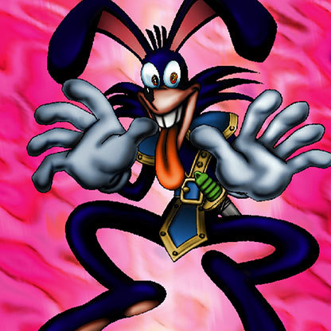

Dark Rabbit

Description: "Strong in TOON terrain."
STATS
ATK: 1100
DEF: 1500DECK COST
Deck Cost per Card: 31EFFECT NOT IMPLEMENTED
Fusion List (10 Possible Fusions)
- Dark Rabbit + Blue-Winged Crown = Garvas
- Dark Rabbit + Claw Reacher = Chimera the Flying Mythical Beast
- Dark Rabbit + Cyber-Stein = Dice Armadillo
- Dark Rabbit + Dancing Elf = Garvas
- Dark Rabbit + Harpie Lady = Garvas
- Dark Rabbit + Niwatori = Garvas
- Dark Rabbit + Mystical Elf = Nekogal #2
- Dark Rabbit + Yamatano Dragon Scroll = Koumori Dragon
- Dark Rabbit + Wall of Illusion = Chimera the Flying Mythical Beast
- Dark Rabbit + Witch's Apprentice = Nekogal #2